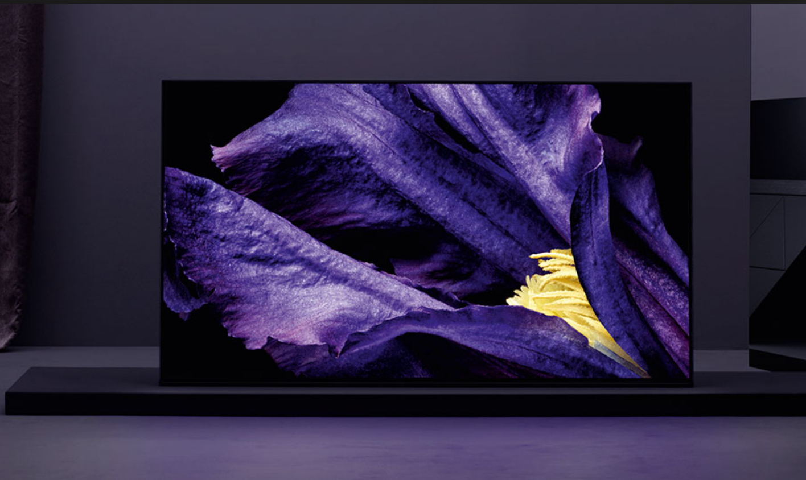
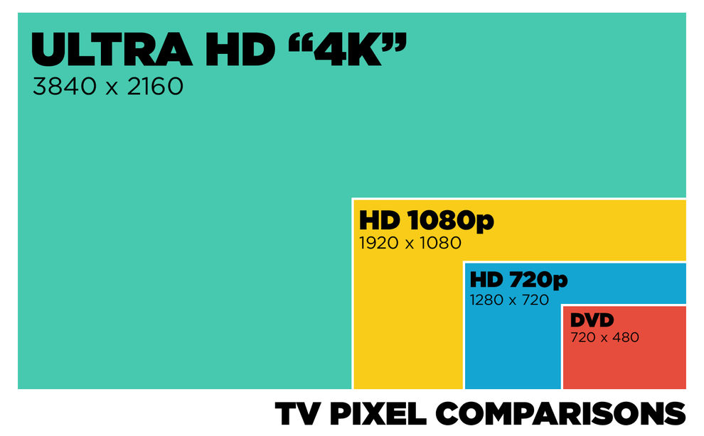
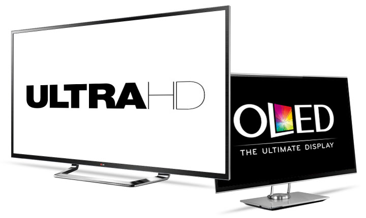

Buying guide

4K TV is the new gold standard for TV and video quality. Simply put, 4K TV is a vastly improved-upon HD TV; it’s Ultra HD! While the technology did exist as far back as the early 2000’s, it wasn’t really available to consumers until just the last few years. Also known as Ultra HD, 4K TV is becoming popular because of its top-quality video picture; these days it’s as good as TV can get, since it’s four times the resolution of existing HD.
So you’ve heard 4K TV is amazing, but why is it so great?
To answer that question, we need to talk pixels: the ‘4’ part of 4K TV comes from the approximate number of horizontal pixels; there are about 4000, while a regular HD TV has only about 2000 horizontal pixels. More pixels means a clearer more precise image for you to enjoy.
For those who like the specifics, the resolution is 3,840 x 2,160 pixels, which adds up to more than 8 million pixels in total. Do the math and it’s easy to see that 4K TVs give you four times the detail of current high-definition televisions, so with those eight million pixels, Ultra HD is able to provide more life-like colour, amazingly vivid brightness, and authentically realistic detail, thanks to an ultra sharp video picture.
What’s in a name: 4K vs Ultra HD?
When shopping for a new 4K set, you’ll likely notice the terms 4K, UHD, Ultra HD, or the all-encompassing “4K Ultra HD” being used. The terms are all interchangeable. Why the multiple names, then? Several years ago a group of consumer technology types got together and chose UHD as the official term for this format. However by that time, people had been using the term 4K for so long, that the name stuck.
4K Ultra HD, OLED and QLED
With 4K TV explained, what’s OLED? It stands for Organic Light Emitting Diode TV. It uses organic materials such as carbon, with a dose of electricity to create areas of light, rather than pinpoints. To borrow an explanation from tech magazine c/net, “LEDs are like tiny light bulbs, while OLEDs are light-emitting areas or surfaces.” This means OLED TVs don’t use a backlight, like other traditional types, and as a result can be ultra thin. But here’s the rub; OLED and 4K are not mutually exclusive. While 4K supplies the screen resolution via the number of pixels, it works with OLED technology supplying the light and the colour, meaning these two acronyms work as a team, and you can easily find TVs that have both these standout features all in one ultra-thin screen. (Here’s a link to more information about 4K OLED TVs produced by LG) You may also see the term QLED when shopping for a 4K TV. QLED, generally speaking, is a term for a Samsung TV (shop Samsung QLED TVs here). These use something called Q Colour to create a more true to life picture, hence QLED.